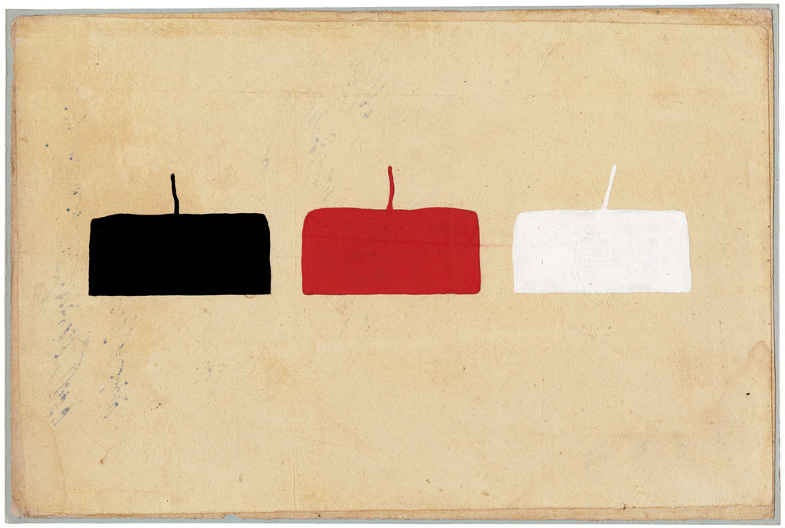
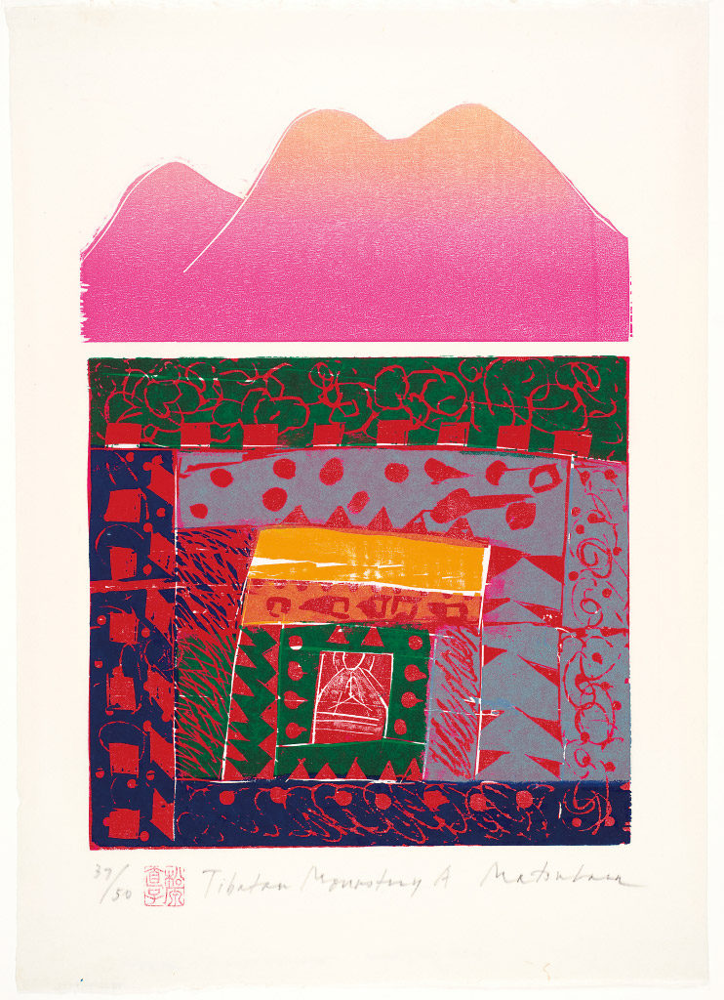

six recent projects
project 1
My take on the classic bell bottom script genre. Funkford started as a lettering commission for NYMag, and after 9 months of thinking, sketching, drawing and redrawing, I am ready for you to use it. It is off to a good start, with full caps and lowercase, an array of positional alternates, a little punctuation and a couple of ligatures. See the version notes for more information.

project 2
project 3
project 4